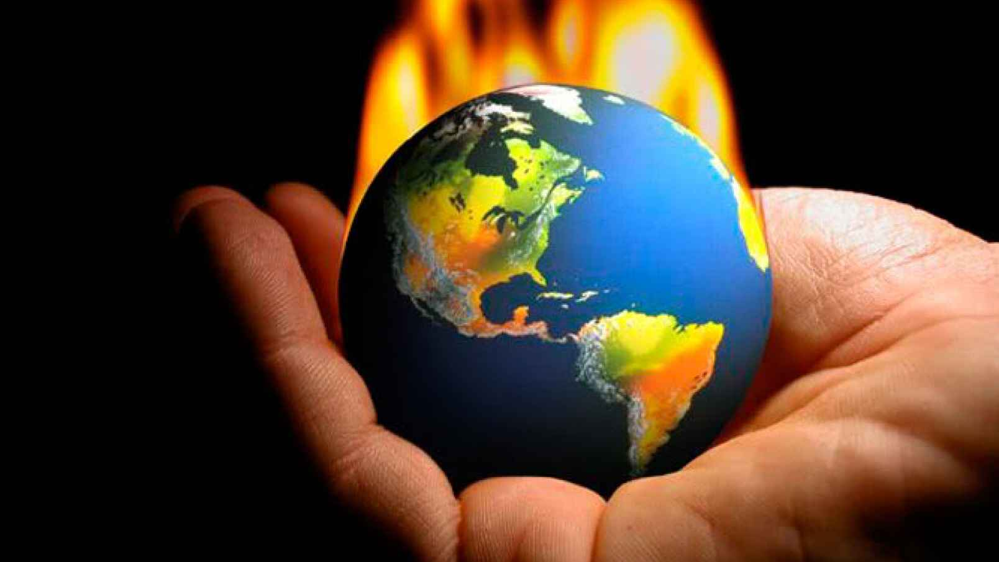
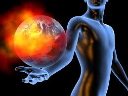

Global Waming

Global Warming is the increase of Earth's average surface temperature due to effect of greenhouse gases, such as carbon dioxide emissions from burning fossil fuels or from deforestation, which trap heat that would otherwise escape from Earth. This is a type of greenhouse effect.
Is global warming, caused by human activity, even remotely plausible?

Earth's climate is mostly influenced by the first 6 miles or so of the atmosphere which contains most of the matter making up the atmosphere. This is really a very thin layer if you think about it. In the book The End of Nature, author Bill McKibbin tells of walking three miles to from his cabin in the Adirondack's to buy food. Afterwards, he realized that on this short journey he had traveled a distance equal to that of the layer of the atmosphere where almost all the action of our climate is contained. In fact, if you were to view Earth from space, the principle part of the atmosphere would only be about as thick as the skin on an onion! Realizing this makes it more plausible to suppose that human beings can change the climate. A look at the amount of greenhouse gases we are spewing into the atmosphere (see below), makes it even more plausible.
What are the Greenhouse Gases?
The most significant greenhouse gas is actually water vapor, not something produced directly by humankind in significant amounts. However, even slight increases in atmospheric levels of carbon dioxide (CO2) can cause a substantial increase in temperature.
Why is this? There are two reasons: First, although the concentrations of these gases are not nearly as large as that of oxygen and nitrogen (the main constituents of the atmosphere), neither oxygen or nitrogen are greenhouse gases. This is because neither has more than two atoms per molecule (i.e. their molecular forms are O2 and N2, respectively), and so they lack the internal vibrational modes that molecules with more than two atoms have. Both water and CO2, for example, have these "internal vibrational modes", and these vibrational modes can absorb and reradiate infrared radiation, which causes the greenhouse effect.
Secondly, CO2 tends to remain in the atmosphere for a very long time (time scales in the hundreds of years). Water vapor, on the other hand, can easily condense or evaporate, depending on local conditions. Water vapor levels therefore tend to adjust quickly to the prevailing conditions, such that the energy flows from the Sun and re-radiation from the Earth achieve a balance. CO2 tends to remain fairly constant and therefore behave as a controlling factor, rather than a reacting factor. More CO2 means that the balance occurs at higher temperatures and water vapor levels.